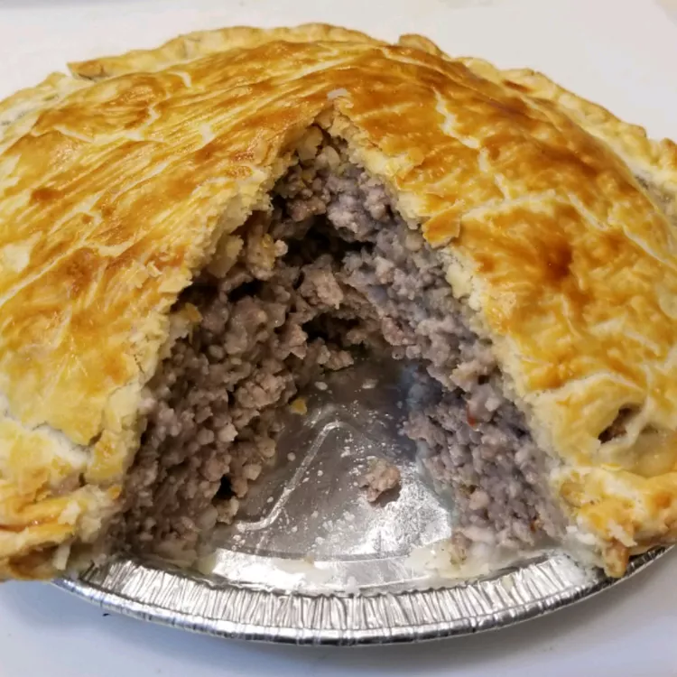

Pork Pie

Decription
This pork pie recipe is a standard Christmas Eve or New Year's Eve treat in my predominantly French Canadian hometown in Maine. It's served with catsup or mustard, tossed salad, and pickles. Simple but wonderful. Top individual servings with catsup or mustard before serving.
Source: Allrecipes
Ingredients
- 2 pounds lean ground pork
- 1 pound lean ground beef
- 1 ½ cups mashed potatoes
- 1 teaspoon ground nutmeg
- salt and ground black pepper to taste
- 1 (14.1 ounce) package double-crust pie pastry, thawed
- 1 large egg white, beaten
Steps
- Preheat the oven to 375 degrees F (190 degrees C).
- Heat a large skillet over medium-high heat. Cook and stir pork and beef in the hot skillet until browned and crumbly, 5 to 7 minutes. Drain and discard grease.
- Mix together cooked meat, mashed potatoes, nutmeg, salt, and pepper in a large bowl until well combined.
- Line a 9-inch pie dish with 1 pastry crust. Spoon meat mixture into crust. Cover with second pastry crust; seal and flute the edges. Brush top crust with beaten egg white. Shield the edges with aluminum foil to prevent crust from burning.
- Bake in the preheated oven for 30 minutes. Remove aluminum foil and continue baking until edges brown, about 15 minutes more.